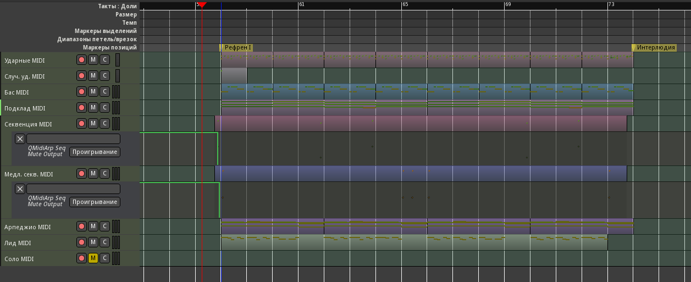
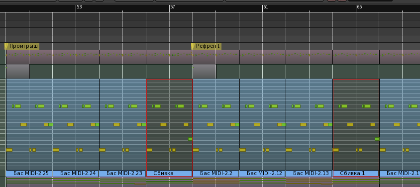

Поскольку рефрен является ключевым элементом структуры, начнём с него. Уже готовый набросок звучит достаточно выразительно, поэтому, пожалуй, для рефрена он подойдёт (первые 16 тактов). Перед ним нужно расположить проигрыш, который у нас в наброске наоборот во второй половине.
Сперва исправим регионы секвенций, они выходят за такт, и лучше растянуть их начала до ровного такта назад, тогда можно будет перемещать их не по долям, а по ровным тактам. На дорожке Медл. секв. MIDI регионы - связанные копии, поэтому вторая половина от этого сдвинулась на 7/8 вперёд, её нужно передвинуть к началу 17 такта, а предыдущий регион укоротить. Наконец, ножницами разрезать цельный регион на дорожке Секвенция MIDI по 17-му такту.

Выделяем все регионы от начала до цифры 18 на линейке и переносим на позицию Рефрен I, регионы секвенций на такт выдвинуты влево за маркер.
На проигрыш у нас запланировано 8 тактов, а осталось 16. Укоротим длинные регионы секвенций до 25-го такта. Затем выделим всё от начала до 26-го такта и перенесём на позицию Проигрыш. В оставшихся регионах нет ничего ценного, только повторения. Можно их удалить, кроме партии подклада - здесь каденция, которая может потом где-нибудь пригодиться.
Автоматизация от перемещений сломалась, исправим её. На обоих дорожках первая точка расположена в самом начале (1 такт) в положении 1 (включено). Затем точка на 50-м такте в положении 0 (отключено), и ещё одна точка на 74-м такте в положении 1.
Переключение между проигрышем и рефреном слишком резкое, его надо смягчить. Плавность перехода зависит от множества мелких деталей. Действия, подобные изложенным ниже, придётся делать с многими, если не со всеми, переходами на позициях, обозначенных маркерами.
На дорожке с медленным ритмом сделаем вариацию с вступлением из-за такта: пусть в проигрыше повторяется только половина первого такта ритма, а в рефрене оба такта, причём в последних двух тактах проигрыша играет полный паттерн. Отсоединяем копию для левого региона, переименуем её в Проигрыш. Добавим ноты, сбрасывающие секвенцию на середине второго такта, а на двух последних тактах проигрыша оставляем играть полную.
Ударники играют как-то наоборот, хотелось бы электрический снейр слышать в самом рефрене, а сбивку - перед его началом. Удалим первые четыре региона ударных рефрена, перенесём на их место регионы из проигрыша. В проигрыш перенесём четыре последних региона из рефрена. Наконец, скопируем ударные из первой половины рефрена на пустое место во второй половине. Регион со сбивкой переименовать в Сбивка, чтобы не терялся. Крэш в конце сбивки и вторую бочку во втором такте, наверное, лучше удалить.

В линии баса тоже нужна сбивка, и она уже есть - в самом конце, так что просто поменяем местами последние регионы проигрыша и рефрена. Регион со сбивкой можно переименовать. В 65-м такте тоже используем его: там ломается медленная секвенция, а на следующем такте вступает арпеджио.
Подклад в проигрыше начинает громко, а в рефрене играет тихо, нужно поменять первый и второй регионы подклада местами. Тогда пик динамики будет приходиться на начало рефрена, где кульминация. Т.е. в проигрыше подклад играет пиано, в первой половине рефрена форте, а во второй - снова пиано. Там, где форте, как раз заглушен арпеджиатор, и он не будет мешать, когда лид будет играть на фоне громкого подклада.
В начале проигрыша быстрая секвенция не нужна, она мешает рисунку лида. Просто заглушим её, оставив хвостик: переместим в автоматизации точку отключения кнопки Mute за 1 и 1/8 такта до окончания региона (где последняя нота).
Арпеджио на конце проигрыша обрывается неожиданно, играя в конце две лишние ноты. Это можно исправить, укоротив регион на 2/16.
Осталось сделать приемлемое окончание рефрена. За ним следует интерлюдия, поэтому можно особо не церемониться, просто приглушить всё в правильных местах